作品集 / Italy
意大利。
沿着海岸线，收集海风、船只与蓝色。
← 首页12 PHOTOGRAPHS

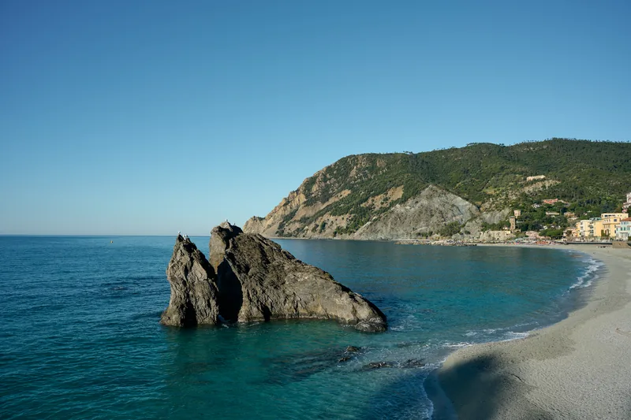
ISO 64 · 1/200 秒 · f/8 · 24 mm
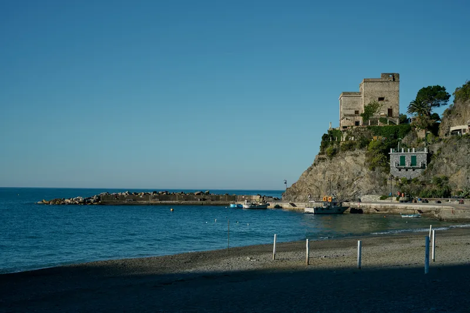
ISO 64 · 1/500 秒 · f/7.1 · 46 mm
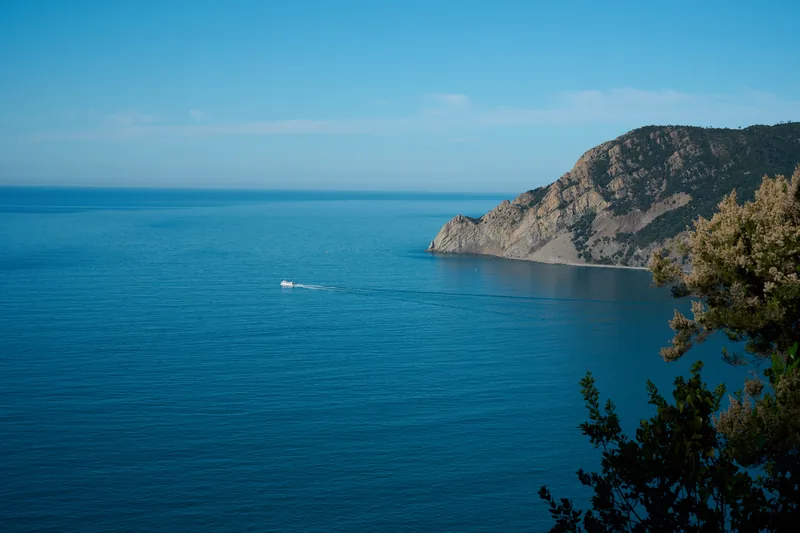
ISO 64 · 1/320 秒 · f/8 · 50 mm
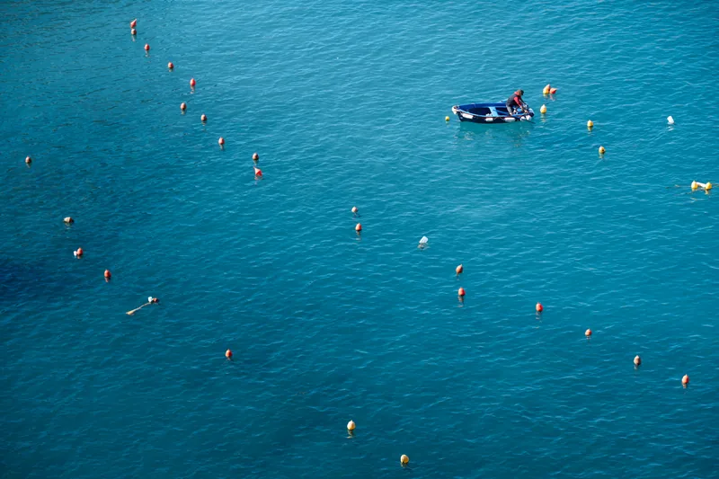
ISO 64 · 1/60 秒 · f/8 · 120 mm
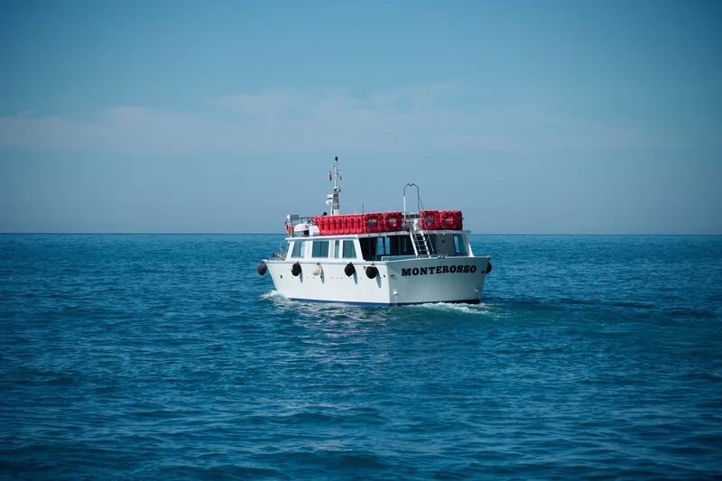
ISO 64 · 1/1250 秒 · f/4 · 120 mm
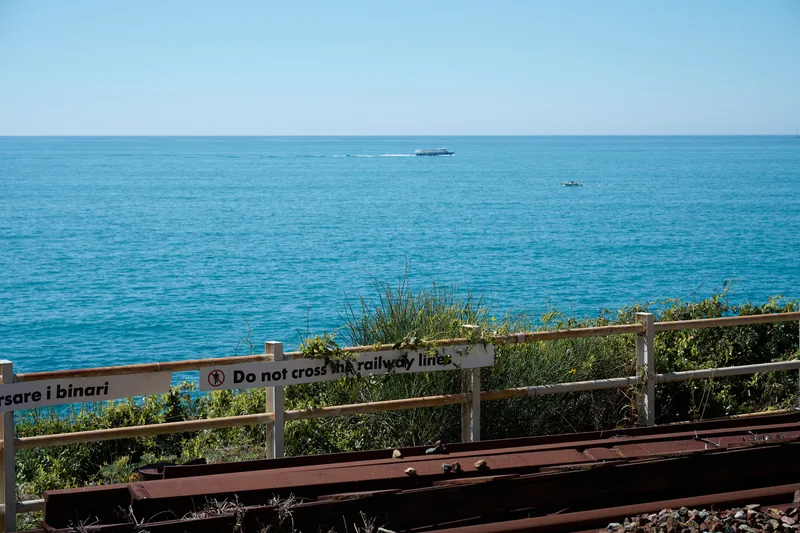
ISO 64 · 1/160 秒 · f/8 · 67 mm
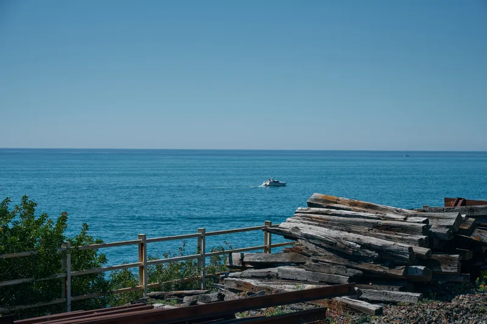
ISO 64 · 1/250 秒 · f/8 · 68 mm
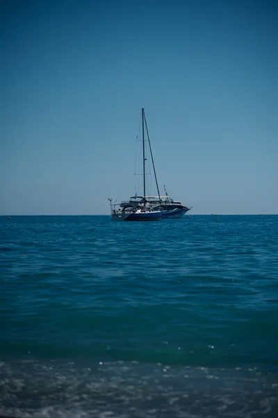
ISO 64 · 1/1600 秒 · f/4 · 120 mm
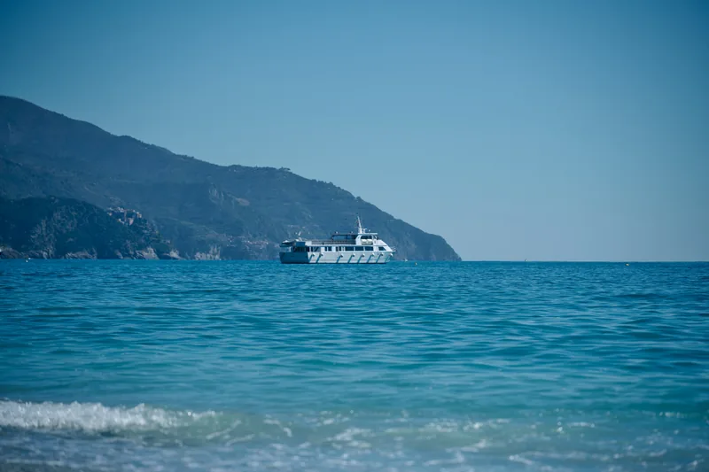
ISO 64 · 1/1250 秒 · f/4 · 120 mm
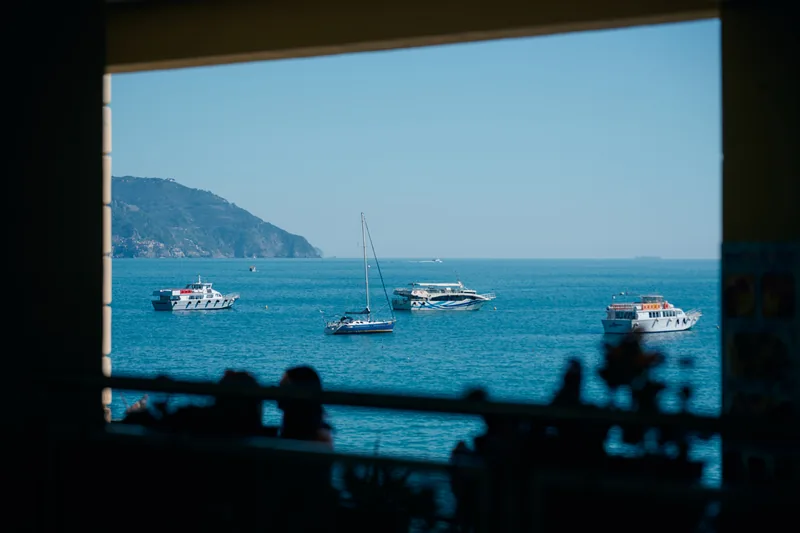
ISO 64 · 1/1000 秒 · f/4 · 88 mm ISO 64 · 1/1250 秒 · f/4 · 105 mm

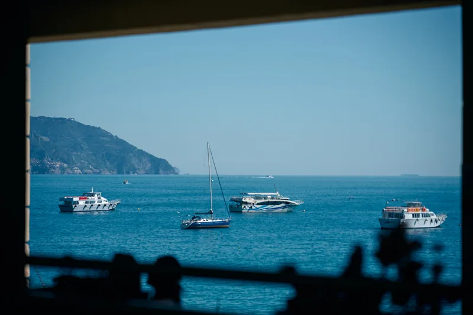
ISO 64 · 1/1250 秒 · f/4 · 105 mm